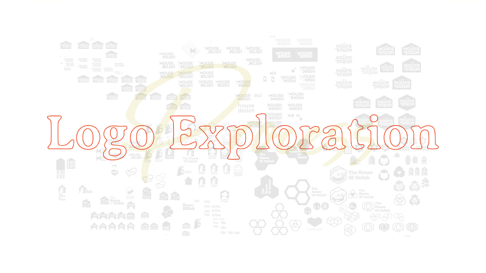
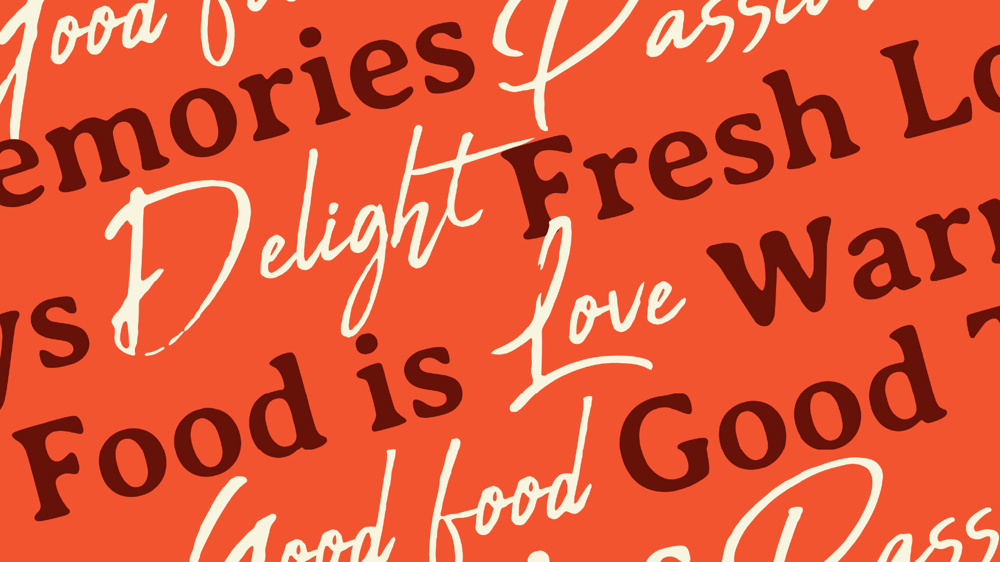
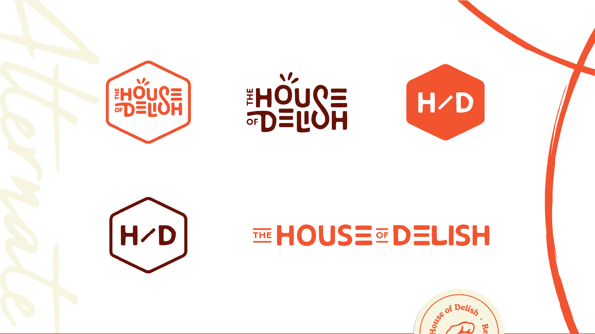
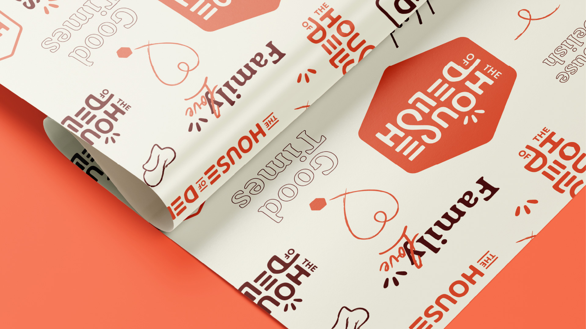
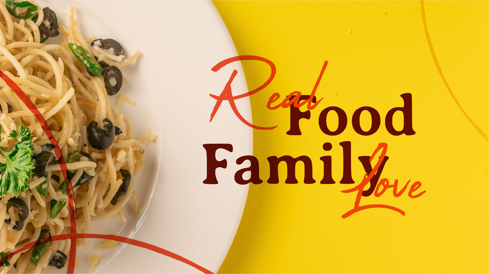
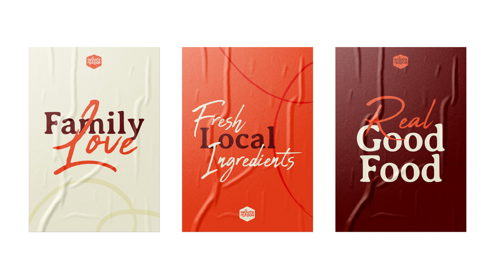
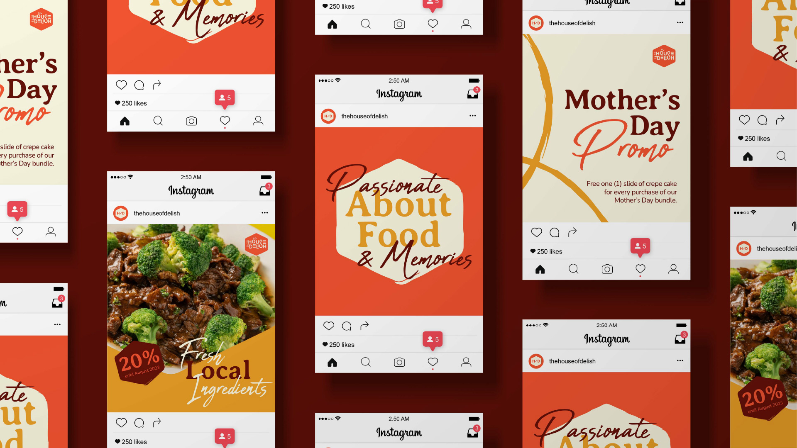
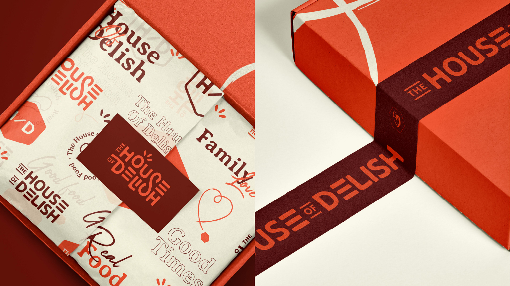

Establish The House of Delish as the go-to shop for local pastries and meals, increase demand for their products, and attract a younger demographic without alienating loyal customers.
Through a facilitated strategy session, we uncovered the core challenges and aspirations of the brand. We defined attributes that bridged warmth and modernity, using them as the foundation for an identity that could speak to both their loyal base and a new generation of customers.
A warm, distinctive identity that successfully bridged both target markets. The new brand opened new opportunities to serve more local markets and positioned The House of Delish with the confidence to grow.








